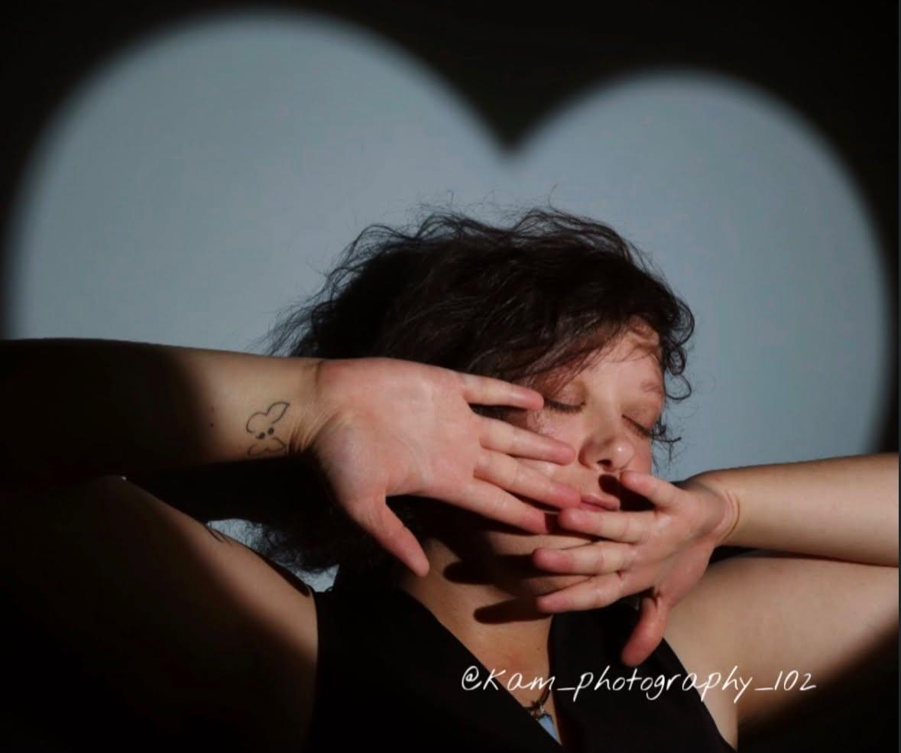
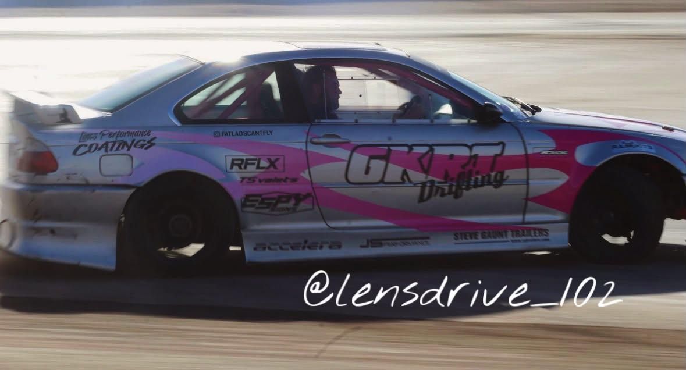

On this page you can easily find photographers based on location and click to find their websites/ social. No more struggling to find photographers!
Lasma Lagzdina Photography. A photographer based in Peterborough, with a big love for capturing the little moments that become the most precious memories.
She photographs cars very well! Whether it's a beautiful classic, your pride and joy, a special build or simply the car you absolutely adore — She'll capture its personality, details and all the little things that make it special.
Areas covered: Peterborough - Cambrigeshire - Surrounding areas


@lensdrive_102. A photographer based in Wisbech. @lensdrive_102 brings cars, motorbikes and the people behind them into focus, capturing the details, personality and atmosphere that make every vehicle unique.
Whether it's a modified show car, a stunning motorcycle, a rolling shot or the atmosphere of a car meet, She aims to capture those moments worth remembering.
She photographs cars very well! Whether it's a beautiful classic, your pride and joy, a special build or simply the car you absolutely adore. She'll capture its personality, details and all the little things that make it special.
Areas covered: Peterborough - King's Lynn - Surrounding areas